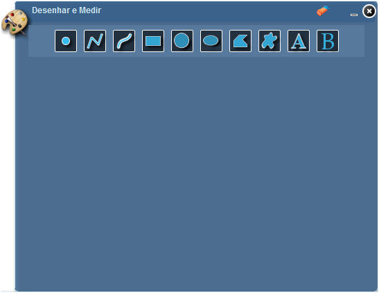
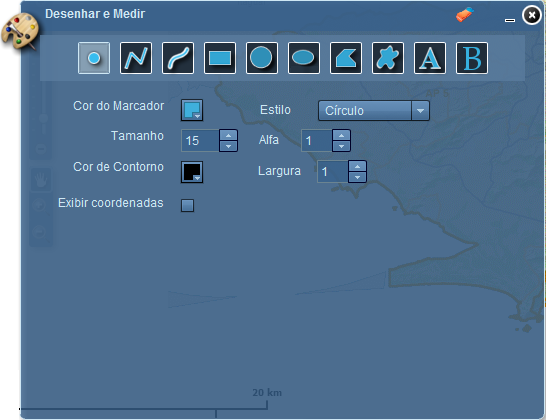
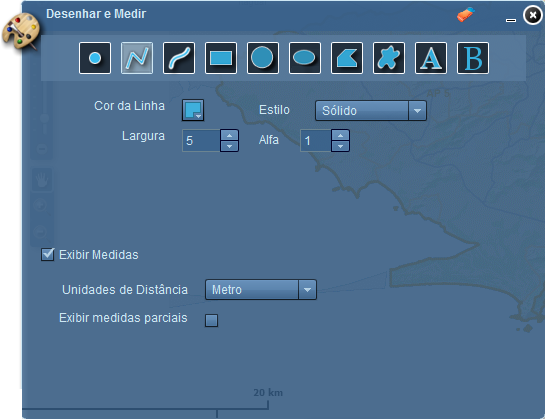
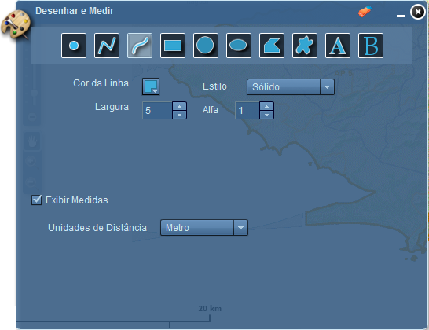
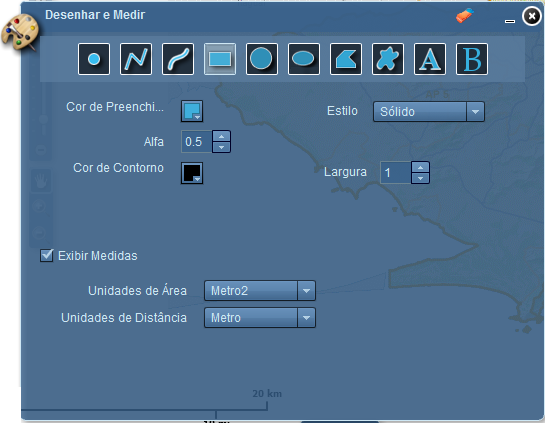
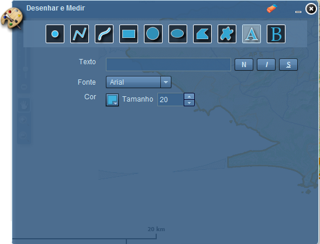
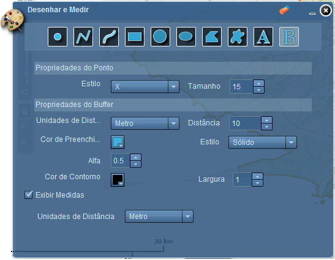

Desenhar e Medir
A ferramenta Desenhar e Medir permite criar simples gráficos e textos no mapa. Também oferece capacidade de medição, apresentando valores de medição (se ativado) para características desenhadas: comprimentos de linhas, áreas e perímetros de polígonos. Quando a ferramenta Desenhar e Medir é ativada, é apresentada uma caixa de diálogo simples que contém 10 ferramentas de criação de recursos. Da esquerda para direita, são elas:

As propriedades de feições são modificadas para diferentes tipos de feições:

Propriedades de pontos:
Cor do Marcador: define cor;
Estilo: define tipo de símbolo;
Tamanho: define tamanho para o ponto;
Transparência: define opacidade;
Cor de Contorno: define cor de contorno;
Largura: define largura de contorno;
Exibir Coordenadas: exibe coordenadas onde o ponto foi aplicado.


Propriedades de linhas:
Cor da Linha: define cor;
Largura: define largura;
Estilo: define estilo;
Transparência: define nível de opacidade;
Exibir Medidas: habilita as propriedades de medidas da linha.
Propriedades medidas linhas:
Unidade de Distância: exibe a distância de acordo com a unidade de medida selecionado;
Exibir Medidas Parciais: habilitada, exibe as medidas em cada ponto de quebra da linha. (está propriedade é visível somente para polígono de linhas).

Propriedades de polígonos:
Cor de Preenchimento: define cor de preenchimento;
Estilo: define estilo de preenchimento;
Transparência: define nível de opacidade de preenchimento;
Cor de Contorno: define a cor de contorno;
Largura: define largura de contorno;
Exibir Medidas: habilita as propriedades de medidas do polígono.
Propriedades medidas do polígono:
Unidade de Área: exibe o tamanho da área de acordo com a unidade de medida selecionada;
Unidade de Distância: exibe o tamanho do perímetro de acordo com a unidade de medida selecionada.

Propriedades de textos:
Texto: define texto que será aplicado no mapa;
Fonte: define estilo de fonte do texto;
Cor: define cor de texto;
Tamanho: define tamanho de texto.

Propriedades do buffer:
Propriedades referentes ao ponto do buffer:
Estilo: define tipo de símbolo para o ponto;
Tamanho: define tamanho para o ponto.
Propriedades referentes ao buffer aplicado:
Unidade de Distância: define a unidade de medida em que o buffer será aplicado no mapa;
Distância: define a distância que o buffer será aplicado;
Cor de Preenchimento: define cor de preenchimento;
Estilo: define estilo;
Alfa: define opacidade;
Cor de Contorno: define cor de contorno;
Largura: define largura do contorno;
Exibir Medidas: habilita as propriedades de medidas do buffer.
Propriedades medidas do buffer:
Unidade de Distância: exibe a distância de acordo com a unidade de medida selecionado.